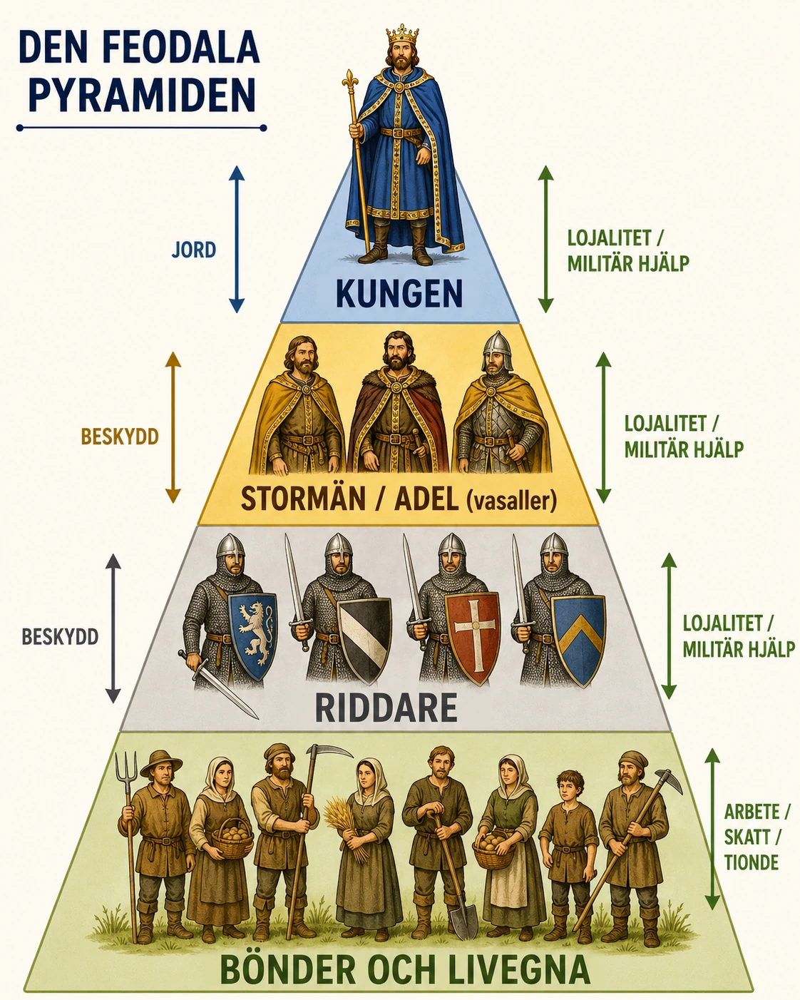
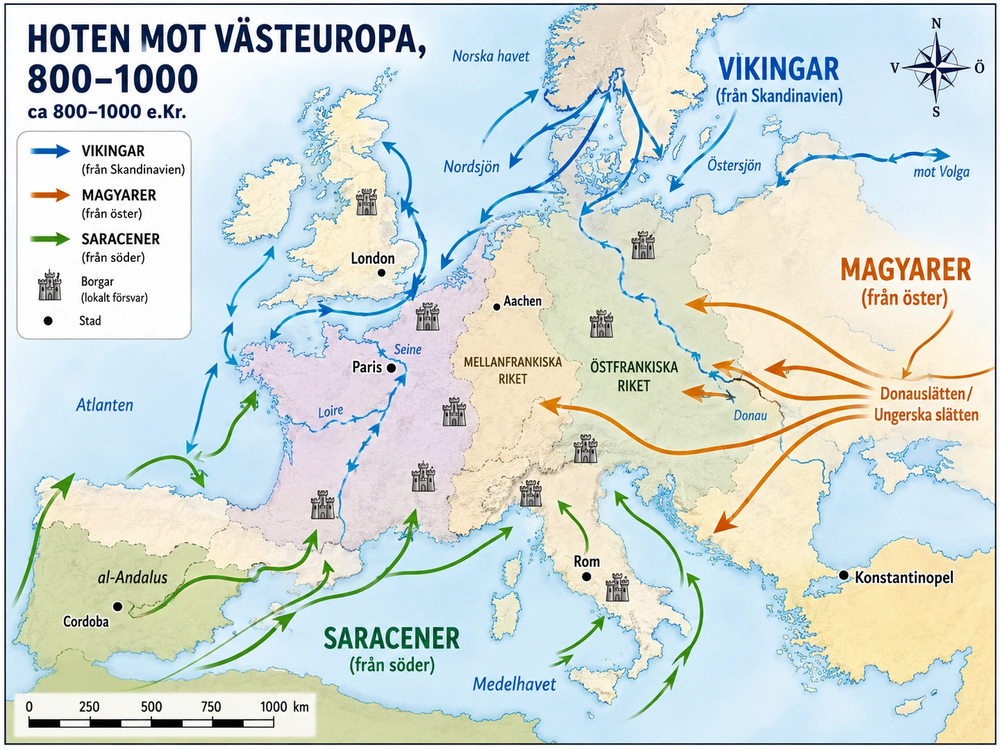
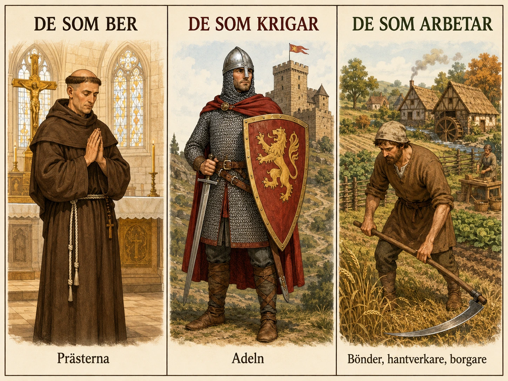

— jord, skydd och lojalitet som höll ihop ett samhälle —
Efter att Karl den stores rike föll sönder blev Västeuropa otryggt. Vikingar, magyarer och saracener hotade. Kungamakten försvagades. I detta läge växte ett nytt sätt att organisera samhället fram — feodalismen. Vi börjar med hur det fungerade.
Under medeltiden fanns det inte stora fabriker, banker eller pengaekonomi som idag. Den viktigaste resursen var jord — där man kunde odla mat och hålla djur. Den som ägde jord hade makt. Feodalismen var ett system som byggde på just jord, plus två andra saker: skydd och lojalitet.
Feodalismen kan ritas som en pyramid med fyra nivåer: längst upp kungen — han ägde i teorin all mark i riket; under honom adel och stormän — de fick stora områden av kungen, och kallades vasaller; under dem riddare — krigare till häst som fick mindre områden av adeln; längst ner bönder och livegna — de arbetade på jorden.
En vasall var en person som fick jord av en mäktigare herre. När han fick jorden lovade han något tillbaka: han skulle vara lojal mot sin herre. Det viktigaste var att han skulle hjälpa till med soldater och krigare när herren behövde det. Detta personliga avtal kallades ett trohetsband.

De flesta människor under medeltiden var bönder. De bodde på stora gods som ägdes av en godsherre — en adelsman, en riddare, en biskop eller ett kloster. Bönderna fick bruka jorden för att försörja sin familj, men de var tvungna att ge en del av skörden till godsherren. De fick också arbeta vissa dagar på herrens mark utan lön.
I utbyte fick bönderna skydd. Om fiender eller plundrare kom kunde de söka sig till herrens borg. I en farlig tid var det värdefullt.
I nästa del ska vi se varför detta system uppstod.
I förra avsnittet läste du om hur Karl den stores rike föll sönder efter hans död. Verdunfördraget delade riket. Yttre fiender — vikingar från norr, magyarer från öster, saracener från söder — pressade Västeuropa. Kungamakten försvagades. I detta läge växte ett nytt sätt att organisera samhället fram. Det kallas feodalism. Vi börjar med hur det fungerade — eftersom det är lättare att förstå varför något uppstod om man först vet vad det var.
När Västrom föll och Karl den stores rike splittrades blev Västeuropa mer osäkert. Det fanns inte längre en stark stat som kunde hålla ordning, bygga vägar, ta in skatt och skydda människor. Ett nytt sätt att organisera samhället växte därför fram. Det brukar kallas feodalism.
Feodalismen byggde på tre saker: jord, skydd och lojalitet. Den som ägde jord hade makt — nästan all rikedom kom från jordbruket. Det fanns inte banker, fabriker eller stora handelsstäder som idag. Den viktigaste resursen var mark där man kunde odla mat och hålla djur.
Högst upp i det feodala systemet fanns kungen. I teorin ägde han all mark i riket. Men kungen kunde inte själv kontrollera hela landet. Han hade inte en modern stat med polis, domstolar, myndigheter och ett fast skattesystem. Därför behövde han hjälp av mäktiga stormän.
Kungen delade ut stora jordområden, som kallades förläningar, till adelsmän. En förläning kunde bestå av byar, åkrar, skogar, kvarnar och människor som arbetade där. Den adelsman som tog emot jord av kungen kallades vasall.
När vasallen fick jorden lovade han något tillbaka. Han skulle vara lojal mot sin herre. Det viktigaste var att han skulle hjälpa till militärt — om kungen behövde krigare skulle vasallen komma med soldater, riddare och utrustning.
Man kan säga att feodalismen var ett slags avtal. Kungen gav: jord och beskydd. Vasallen gav: lojalitet och militär hjälp. Detta kallades ett trohetsband. Det var inte ett avtal mellan staten och medborgarna — det var ett personligt band mellan två mäktiga personer.
Under medeltiden blev riddare allt viktigare. En riddare var en tungt beväpnad krigare till häst. Att vara riddare krävde mycket träning och dyr utrustning — häst, rustning, svärd, sköld, hjälm och ofta flera tjänare.
Därför behövde riddaren inkomster. Dessa inkomster kom från jord. En riddare kunde få ett mindre landområde av en större adelsman. I utbyte lovade riddaren att strida för honom.
På detta sätt bildades en kedja av beroenden: Kung → stora adelsmän → mindre adelsmän/riddare → bönder. Alla i kedjan hade skyldigheter mot någon annan.
Längst ner i det feodala systemet fanns ofta bönderna. Många bönder var livegna. Att vara livegen var inte exakt samma sak som att vara slav — men det betydde att man var starkt bunden till jorden och till sin herre.
En livegen bonde fick bruka jord — odla marken för att få mat till sig själv och sin familj. Men bonden var tvungen att ge en del av skörden till godsherren. Han kunde också behöva arbeta vissa dagar på herrens mark, reparera vägar, bygga stängsel eller betala olika avgifter. Den livegne bonden kunde oftast inte bara flytta därifrån. Han var knuten till gården eller byn. Om marken bytte ägare följde bönderna ofta med som en del av godset.
Många människor levde på stora jordegendomar som kan kallas gods. Ett gods kunde innehålla åkrar, skogar, betesmarker, kvarn, kyrka och byar. På godset producerades det mesta som behövdes: mat, kläder, redskap och byggmaterial. Eftersom handeln var begränsad under tidig medeltid behövde många områden vara ganska självförsörjande. Det betydde att människor ofta levde hela sitt liv i samma område. De föddes, arbetade, gifte sig och dog i samma by eller på samma gods.
Du kan läsa mer om hur en sådan bondes dag faktiskt såg ut i djupdykningen längst ner.
Feodalismen handlade inte bara om förtryck. För människor under tidig medeltid var skydd mycket viktigt. Om det kom plundrare, fiender eller krigshärar kunde en mäktig herre erbjuda försvar. Han kunde ha en borg, soldater och riddare. Därför accepterade många bönder att betala avgifter och arbeta åt en herre — de behövde skydd.
Men makten var inte jämnt fördelad. Godsherren bestämde villkoren. Bonden hade liten möjlighet att protestera. Det var en byteshandel — men inte mellan jämbördiga parter.
I nästa del ska vi titta närmare på varför detta system växte fram. Vad var det som gjorde att Västeuropa blev så beroende av jord, skydd och lojalitet?
I förra avsnittet läste du om hur Karl den stores rike föll sönder efter hans död. Verdunfördraget delade riket. Yttre fiender pressade Västeuropa. Kungamakten försvagades. Kommunikationen var långsam, vägarna osäkra, handeln liten. I detta läge växte ett nytt sätt att organisera samhället fram. Det kallas feodalism. Vi börjar med hur det fungerade — eftersom det är lättare att förstå varför något uppstod om man först vet vad det var.
För att förstå feodalismen behöver vi först förstå hur annorlunda medeltidens ekonomi var jämfört med vår egen. I dagens samhälle bygger makt och rikedom på många saker: pengar, företag, fastigheter, utbildning, teknik, information. Under medeltiden var bilden mycket enklare. Nästan all rikedom kom från jordbruket.
Det fanns ingen industri som producerade varor i stor skala. Det fanns inga banker som lånade ut pengar i stor mängd. Det fanns inga aktier, inga försäkringar, inga skolor som utbildade människor till välbetalda yrken. Det fanns ingen stark stat som omfördelade resurser genom skatter. Det fanns inte ens särskilt mycket pengar i omlopp — handeln var begränsad och människor klarade sig ofta utan kontanter.
Vad fanns då? Jord. Människor som arbetade jorden. Och våld — eller hot om våld — som kunde användas för att skydda eller ta jorden.
Feodalismen var det system som växte fram för att hantera denna verklighet. Den byggde på tre grundläggande saker: jord, skydd och lojalitet. Den som hade jord kunde producera mat. Den som hade krigare kunde skydda eller erövra jord. Och systemet hölls ihop av personliga band mellan människor som gav varandra något i utbyte.
Högst upp i det feodala systemet fanns kungen. I teorin ägde han all mark i riket. Det är värt att stanna upp vid den formuleringen. Det betydde inte att han faktiskt kontrollerade varje åker eller bonde — det hade varit omöjligt. Det betydde att han hade en överrätt till all mark, ett slags högsta ägande som överlappade med andras användning.
Men kungen kunde inte själv styra hela landet. Han hade inte en modern stat med polis, domstolar, myndigheter och ett fast skattesystem. Vägar var dåliga. Kommunikation var långsam — ett meddelande från Paris till Marseille kunde ta veckor. Och försvar krävde lokala män på plats — inte en general flera dagsresor bort. Därför behövde kungen hjälp av mäktiga stormän.
Hans lösning var att dela ut stora jordområden — kallade förläningar eller län — till adelsmän. En förläning kunde bestå av byar, åkrar, skogar, kvarnar, broar, kvarnrättigheter, fiskerätter och människor som arbetade där. Den adelsman som tog emot jord av kungen kallades vasall.
Detta är feodalismens grundläggande logik: kungen "lånade ut" jord och makt till mäktiga män, i utbyte mot deras tjänster. Istället för att betala soldater med pengar, betalade han med jord. Istället för att styra varje provins direkt, lät han vasaller styra dem i hans namn.
När vasallen tog emot jord lovade han något tillbaka. Det viktigaste var trohet. I en formell ceremoni — som kunde innehålla att vasallen lade sina händer mellan herrens händer och svor en ed — band sig vasallen till sin herre.
Trohetseden innebar konkret: vasallen skulle strida för sin herre när herren behövde det; vasallen skulle ge råd när herren bad om det; vasallen skulle ge hjälp i nöd (till exempel pengar om herren behövde lösa ut sig från fångenskap); vasallen skulle vara lojal och inte alliera sig med herrens fiender.
I utbyte gav herren: jord och inkomster från den jord vasallen fick förvalta; beskydd mot fiender och hot; rätt att styra över det område vasallen fick.
Det är värt att förstå att detta var ett personligt avtal, inte ett politiskt system i modern mening. Det var inte ett kontrakt mellan staten och medborgarna. Det var ett band mellan två specifika människor. När vasallen dog kunde sönerna förhandla om att ärva förläningen, men det var inte automatiskt — det krävde att den nye herren godkände den nye vasallen.
Detta gav feodalismen dess karaktär. Det var inte ett system av regler som gällde alla lika. Det var en väv av personliga relationer, allianser, eder och förpliktelser.
Under medeltiden blev riddaren allt viktigare. En riddare var en tungt beväpnad krigare till häst. Att utrusta och träna en riddare var dyrt — du kan fördjupa dig ytterligare i djupdykningen om stigbygeln längst ner på sidan.
Riddaren behövde inkomster. Och samma logik som mellan kung och adelsman användes mellan adelsman och riddare. En större adelsman gav en mindre del av sin förläning till en riddare, och fick i utbyte riddarens militära tjänst. Riddaren var alltså också en vasall — men nu mot adelsmannen, inte mot kungen direkt.
På så sätt bildades en kedja av beroenden: Kung → stora adelsmän (kungens vasaller) → mindre adelsmän/riddare (adelns vasaller) → bönder. Alla i kedjan hade skyldigheter mot någon annan. Men — och detta är viktigt — kedjan var inte en organisation. Det fanns ingen "feodal organisationskarta". Det var många olika personliga relationer som tillsammans bildade ett mönster.
En adelsman kunde vara vasall mot flera olika herrar samtidigt — för olika förläningar. Det kunde leda till konflikter: vad gör en vasall om två av hans herrar krigar mot varandra? Vem lyder han? Det fanns regler — ofta var "huvudherren" den som höll den största förläningen — men det fanns inga absoluta lösningar.
Längst ner i det feodala systemet fanns bönderna — och här blir bilden komplicerad. Inte alla bönder var lika. Vissa var fria bönder som ägde sin egen jord eller arrenderade den mot betalning. Andra var livegna — den största gruppen i många områden.
Att vara livegen var inte exakt samma sak som att vara slav. En livegen kunde inte säljas separat från jorden, kunde gifta sig och bilda familj, kunde inneha vissa rättigheter inom byns gemenskap. Men han var starkt bunden till jorden och till sin herre.
Konkret innebar livegenskapen att han fick bruka jord men måste ge en del av skörden till godsherren, utföra dagsverken — arbeta vissa dagar på herrens mark utan lön, betala avgifter för att använda herrens kvarn, ugn, bro. Han kunde inte fritt flytta — han var bunden till godset. Om jorden bytte ägare följde han ofta med som en del av godset.
Du kan läsa mer om hur en sådan bondes dag faktiskt såg ut i djupdykningen längst ner.
Många människor levde på stora jordegendomar som kallas gods. Ett gods kunde innehålla åkrar, skogar, betesmarker, kvarn, ugn, kyrka och flera byar. Det var en ekonomisk enhet i sig själv.
På godset producerades det mesta som behövdes: mat, kläder, redskap, byggmaterial, öl, ost, ull. Eftersom handeln var begränsad under tidig medeltid behövde många områden vara ganska självförsörjande. Människor kunde leva hela sitt liv inom samma gods — föddes där, arbetade där, gifte sig där, dog där.
Godsherren — som kunde vara en adelsman, en riddare, en biskop eller ett kloster — hade enorm makt. Han dömde i tvister mellan bönder. Han drev godsets ekonomi. Han representerade bönderna mot kungen och kyrkan. Och han skyddade dem om hot kom.
Det är viktigt att förstå att feodalismen inte bara handlade om förtryck. För människor under tidig medeltid var skydd mycket värdefullt. Vikingar, magyarer och saracener hotade Västeuropa (du kan läsa mer om det i djupdykningen längst ner). En lokal herre med borg, riddare och beväpnade män kunde vara skillnaden mellan trygghet och katastrof.
Därför accepterade många bönder att betala avgifter och arbeta åt en herre. Det fanns en idé om ömsesidighet — kyrkan formulerade det till och med teologiskt: "De som ber, de som krigar, de som arbetar" (du möter den idén igen i §C om ståndssamhället). Var och en hade sin plats. Alla behövde varandra.
Men ömsesidigheten var ojämn. Godsherren bestämde villkoren. Han kunde höja avgifter, kräva fler dagsverken, döma hårt i tvister. Bonden hade få sätt att protestera. Han kunde inte gå till en högre domstol — den högre domstolen var hans herre. Han kunde inte flytta — han var bunden. Han kunde inte göra uppror — det skulle krossas av riddare.
Det är värt att hålla båda sakerna i huvudet samtidigt. Feodalismen var ett system av ömsesidiga skyldigheter — och samtidigt ett system av djup ojämlikhet. De flesta människor accepterade det eftersom alternativet (att stå utan skydd) var värre. Men det betydde inte att systemet var rättvist.
I nästa del ska vi titta närmare på varför detta system växte fram. Vilka var de historiska krafter som drev Västeuropa mot just denna lösning?
I avsnitt 1 läste du om hur Västrom föll år 476. Och i avsnitt 3 om hur Karl den stores rike splittrades efter hans död. Resultatet var att Västeuropa inte längre hade någon stark central stat. Vägarna var dåliga. Kommunikationen var långsam. Det fanns ingen polis, ingen modern domstol, ingen armé som kunde skydda hela landet. För vanliga människor blev livet otryggt.
Under 800- och 900-talen kom yttre fiender från tre håll: vikingar från Skandinavien — de seglade i snabba skepp längs kuster och upp för floder; magyarer från öster — snabba ryttarhärar som plundrade djupt in i Västeuropa; saracener från söder — muslimska sjörövare och krigare i Medelhavet. Kungen kunde inte skydda alla. Människor behövde därför lokalt skydd — närmare hemmet.

Under romartiden hade det funnits handel, mynt, marknader och städer. Efter Västroms fall minskade allt detta i Västeuropa. Pengar blev mindre vanliga.
Vad blev viktigt istället? Jord. Den som ägde jord kunde producera mat. Mat var grunden för överlevnad och makt. När kungen ville belöna en krigare hade han ofta inga pengar att ge — så han gav jord istället. Det är en av grundtankarna i feodalismen.
Krigföringen förändrades under medeltiden. Riddare — tungt beväpnade krigare till häst — blev viktiga. Men en riddare var dyr. Han behövde häst, rustning, svärd, sköld och flera tjänare. Eftersom det inte fanns pengar att betala honom med, fick han jord istället. Bönder arbetade på jorden, och bonden betalade en del till riddaren. På så sätt kunde riddaren leva utan att själv odla.
Feodalismen växte alltså fram av många orsaker samtidigt: staten försvagades → människor behövde skydd; yttre hot kom → lokala herrar fick mer makt; pengar försvann → jord blev betalning; riddare behövde inkomster → de fick jord. Allt detta hängde ihop. Feodalismen var lösningen på flera problem på en gång.
I nästa del ska vi se hur människor delades in i grupper med olika rättigheter — ståndssamhället.
I avsnitt 3 läste du om Karl den store och hur han byggde upp ett stort kristet rike i Västeuropa. Han kröntes till kejsare år 800. Men efter hans död började riket långsamt splittras. Genom Verdunfördraget delades riket mellan hans tre sonsöner. Under generationerna efter det fortsatte uppdelningen — och tillsammans med yttre hot ledde det till att Västeuropa blev mer splittrat och mindre tryggt.
Det fanns inte längre någon kejsare som kunde organisera försvar för hela området. Kungar fanns, men deras makt var ofta svag. Vägarna var dåliga. Kommunikationen var långsam — ett meddelande kunde ta veckor att färdas. Det fanns inga moderna myndigheter, ingen polis, inget regelbundet skattesystem.
För vanliga människor blev livet otryggt. Och i det läget kom dessutom yttre hot — från tre håll samtidigt.
Under 800- och 900-talen pressades Västeuropa av tre angripande grupper.
Vikingar från Skandinavien kom med sina snabba skepp längs kuster och uppför floder. De anföll städer, kloster och byar. Kloster var särskilt utsatta eftersom de hade rikedomar (silverkalkar, kröner, helgonskrin) men dåligt försvar.
Magyarer från öster var ett ryttarfolk som slog sig ner i området som senare blev Ungern. De gjorde snabba räder djupt in i Tyskland, Frankrike och Italien. Deras styrka låg i hastighet och bågskytte till häst — innan en frankisk armé kunde samlas, hade de redan plundrat och försvunnit.
Saracener var en samlande benämning på muslimska grupper i Medelhavet. De plundrade kuster och öar i Italien, södra Frankrike och Spanien. Sicilien erövrades av muslimer under denna period.
Kungar försökte ibland organisera försvar mot hoten, men de var sällan tillräckligt starka. Det blev tydligt att lokalt skydd — borgar och beväpnade män nära de utsatta platserna — var nödvändigt. Du kan läsa mer om hoten i djupdykningen längst ner på sidan.
En annan viktig orsak till feodalismen var att pengar blev mindre vanliga. Under Romarriket hade det funnits handel, mynt, marknader, städer och skattesystem. Människor använde mynt i vardagen. Soldater fick lön i mynt. Skatter samlades in i mynt. Det fungerade så länge det fanns en stark stat som präglade mynten och en stark ekonomi som krävde dem.
Men efter Västroms fall minskade allt detta i Västeuropa. Städerna krympte. Handeln minskade. Pengaproduktionen blev mindre. Människor klarade sig oftare utan kontanter — de bytte varor direkt, eller kombinerade vad de odlade själva med vad grannen kunde ge.
I detta läge blev jord den viktigaste resursen. Den som hade jord kunde producera mat. Mat var grunden för överlevnad och makt. Den som hade mycket jord hade också många bönder som arbetade där — och därmed makt över människor.
Och här kommer en helt avgörande sak. När kungar och stormän skulle belöna sina krigare och vasaller, hade de ofta inga pengar att ge. De gav jord istället. En förläning gav vasallen inkomster, eftersom bönderna på jorden producerade mat och betalade avgifter.
När pengar och handel minskade blev jord den viktigaste betalningen.
Detta är en av feodalismens grundläggande mekanismer.
En militär orsak till feodalismens utveckling var att krigföringen blev annorlunda. Under medeltiden blev tungt kavalleri — alltså riddare till häst — allt viktigare. En riddare var en mycket effektiv stridsmaskin. Men han var också dyr.
En riddare behövde häst (helst flera), sadel, vapen (svärd, lans), rustning (kedjebrynja, hjälm, sköld) och flera år av träning från ung ålder. En vanlig fattig bonde kunde inte bara bli riddare — det krävde stora resurser.
En teknisk uppfinning som ofta nämns är stigbygeln — fotstöden som hänger från sadeln. Den gjorde det lättare för en krigare att sitta stadigt på hästen och använda vapen i strid. Du kan läsa mer om stigbygeln i djupdykningen längst ner.
Resultatet av denna utveckling: riddare behövde försörjas. Och i ett samhälle där pengar var ovanliga var lösningen jord. Kungar och adelsmän gav jord till riddare i utbyte mot militär tjänst. Det gjorde att militär makt och jordägande blev sammankopplade.
Den sista pusselbiten är vad som hände nerifrån. För bönder var livet osäkert. De var beroende av skörden. Om det blev missväxt kunde familjen svälta. Om soldater eller plundrare kom kunde de förlora allt.
Därför valde — eller tvingades — många bönder att ställa sig under en mäktigare herres beskydd. De fick bruka mark och få skydd, men i utbyte måste de arbeta och betala. Med tiden blev många bönder livegna.
Det betyder att feodalismen växte fram både uppifrån och nerifrån. Kungar behövde delegera makt till vasaller. Bönder behövde skydd från herrar. Båda processerna pekade åt samma håll.
Som du ser fanns det inte en enda orsak till feodalismen. Den växte fram av flera krafter som verkade samtidigt: statens kollaps efter Roms fall och Karl den stores rikes splittring; yttre hot från vikingar, magyarer och saracener; pengahushållningens nedgång — jord blev viktigare än mynt; riddare behövde försörjas, och fick jord; bönder behövde skydd, och accepterade beroende i utbyte.
Tillsammans skapade dessa krafter ett system där jord, skydd och lojalitet höll ihop samhället. Inget av detta hade räckt ensamt. Men tillsammans formade de ett av medeltidens mest karakteristiska samhällssystem.
I nästa del ska vi se hur människor i detta system delades in i grupper med olika rättigheter — det som kallas ståndssamhället.
När man läser om feodalismens uppkomst kan det vara lockande att leta efter en enda orsak. Var det Roms fall? Var det vikingarna? Var det stigbygeln? Var det pengarnas försvinnande?
Svaret är: det var allt detta på samma gång. Inga av dessa faktorer skapade feodalismen ensamma. Tillsammans skapade de ett mönster som passade en viss tids problem.
Det är ett av historieämnets viktigaste lärdomar. Stora samhällsförändringar har sällan en enda orsak. De har flera samverkande orsaker — och historikerns uppgift är att förstå hur de hänger ihop, inte att hitta "den verkliga orsaken" som förklarar allt. Vi ska därför titta på fem stora krafter som tillsammans drev fram feodalismen i Västeuropa.
Den första kraften är statens sönderfall. Vid Roms fall år 476 förlorade Västeuropa sin gamla centralmakt. Karl den store byggde upp ett nytt kejsardöme — men hans rike blev kortlivat. Genom Verdunfördraget delades riket mellan hans tre sonsöner. Den västra delen blev ungefär dagens Frankrike. Den östra blev ungefär dagens Tyskland. Mellanriket splittrades och försvann som sammanhängande politisk enhet.
Under 800- och 900-talen fortsatte uppdelningen. Det fanns inte längre någon ledare som styrde över hela Västeuropa. Lokala kungar och hertigar fick mer makt. Och i många områden fick lokala grevar och biskopar mer reell makt än kungen själv — de satt på platsen, de hade kontrollen, de fattade besluten.
I detta läge fanns inga moderna statliga strukturer. Inga centrala myndigheter med ämbetsmän över hela riket. Inga regelbundna skattesystem. Inga fasta domstolar. Allt detta måste byggas underifrån, av de som var där, på platsen. Och de som var där var lokala adelsmän, biskopar, abbotar och stormän.
Den andra kraften — och kanske den mest direkt synliga — var yttre hot. Under 800- och 900-talen pressades Västeuropa av tre angripande grupper, som var och en utnyttjade kungamaktens svaghet.
Vikingar från Skandinavien började anfalla från slutet av 700-talet. Det första kända räd-anfallet på ett kloster — Lindisfarne i England — var en chock. Munkarna där hade ansett sig trygga på en avlägsen ö. Men vikingarnas skepp ändrade allt. De var snabba, grunda nog att gå uppför floder, och vendbara nog att slå till var som helst längs en kust. De var inte en armé som rörde sig i en bestämd riktning. De var många små grupper som dök upp överraskande, plundrade, och försvann innan ett försvar kunde organiseras.
Magyarer kom från öster på 800- och 900-talen. De var ett ryttarfolk i den asiatiska stäpptraditionen — med bågar, snabba hästar och taktik som påminde om hunnerna före dem. De gjorde räder djupt in i Tyskland, Frankrike och Italien. Efter ett avgörande nederlag blev magyarerna gradvis bofasta och kristnade — och deras rike utvecklades till kungariket Ungern.
Saracener var en kristen samlande benämning på muslimska grupper i Medelhavsområdet. De plundrade kuster och öar — och utförde till och med ett anfall på Rom under 800-talet. Sicilien erövrades av muslimer och förblev muslimskt fram till normandernas erövring på 1000-talet.
Hoten från vikingar, magyarer och saracener gjorde två saker samtidigt. För det första visade de hur svag kungamakten var — kungen kunde inte skydda alla. För det andra gjorde de lokalt försvar nödvändigt — borgar, riddare och beväpnade män på plats. Och det är där feodalismens lokala struktur fick sin praktiska motivering. Du kan läsa mer om hoten i djupdykningen längst ner.
Den tredje kraften var ekonomisk. Pengahushållningen — alltså ekonomin som bygger på mynt och betalning i pengar — minskade dramatiskt under tidig medeltid.
Under Romarriket hade Västeuropa varit en del av ett enormt handelssystem. Mynt cirkulerade. Soldater fick lön i mynt. Skatter samlades in i mynt. Städer var marknadscentra. Handeln över Medelhavet var omfattande.
Efter Roms fall — och särskilt efter att den muslimska expansionen tog kontrollen över Medelhavet under 600- och 700-talen — krympte handeln dramatiskt i Västeuropa. Städerna minskade. Marknaderna blev mindre. Mynten cirkulerade i mindre mängder. Människor klarade sig oftare utan kontanter.
I detta läge blev jord den viktigaste resursen i samhället. Jord producerade mat — och mat var grunden för överlevnad. Jord gav också skydd, eftersom man kunde bygga försvar på den. Och jord gav makt över människor, eftersom bönderna som arbetade på jorden var beroende av den.
Här kommer feodalismens mest centrala mekanism. Kungar och stormän som ville belöna sina krigare och vasaller hade ofta inga pengar att ge. Det fanns helt enkelt inte tillräckligt med mynt. Vad gjorde de istället? De gav jord. En förläning gav vasallen inkomster, eftersom bönderna producerade mat och betalade avgifter.
På så sätt blev jord en slags betalning som inte kunde användas upp. Du kunde inte spendera den. Du kunde inte mista den genom att ha för mycket att betala. Det blev en mer hållbar form av belöning i ett samhälle utan stabil pengaekonomi.
När pengar och handel minskade blev jord den viktigaste betalningen.
Detta är så centralt att det är värt att förstå djupt. Hela feodalismens "jord-i-utbyte-mot-tjänst"-system bygger på just denna ekonomiska verklighet. Om pengar hade flödat fritt — som i Bagdad eller Konstantinopel vid samma tid — skulle feodalismen kanske inte ha utvecklats på samma sätt.
Den fjärde kraften var militär. Krigföringen i Västeuropa förändrades under tidig medeltid på sätt som krävde nya samhällsstrukturer.
Den viktigaste förändringen var att tungt kavalleri — alltså riddare till häst i full rustning — blev allt viktigare. En riddare var en formidabel stridsmaskin. Med rätt utrustning, rätt häst och rätt träning kunde han krossa infanteri och dominera ett slagfält.
Men en riddare var också enormt dyr. Han behövde en eller flera stridshästar uppfödda specifikt för krig, en full rustning (på 1000-talet kedjebrynja, hjälm, sköld), vapen (svärd, lans, dagger), flera år av träning från ung ålder och tjänare som kunde hjälpa honom med utrustning och hästar.
Du kan tänka dig att utrusta en riddare kostade ungefär som det skulle kosta idag att utrusta en stridspilot. Det var något bara samhällets toppskikt kunde finansiera.
En teknisk uppfinning som ofta nämns i detta sammanhang är stigbygeln — fotstöden som hänger från sadeln och gör det möjligt för ryttaren att stå stadigt och leverera kraftiga slag eller stötar. Historikern Lynn White menade att stigbygeln var en avgörande faktor för feodalismen. Andra historiker är mer försiktiga — du kan läsa mer i djupdykningen längst ner.
Oavsett hur man värderar stigbygelns roll specifikt, är den övergripande poängen tydlig: krigföringen blev dyrare. Soldater behövde mer utrustning, mer träning, mer infrastruktur. Och i ett samhälle utan pengar kunde detta bara finansieras genom jord. Ge en krigare jord, och han kan försörja sig själv och sin utrustning från bönderna som arbetar där. Det är en av de mest centrala ekonomiska logiker som driver feodalismen framåt.
Den femte kraften är kanske den mest mänskliga. Människor sökte skydd.
För bönder var livet under tidig medeltid otroligt osäkert. De var beroende av skörden. En missväxt kunde betyda svält. Plundrande vikingar kunde betyda död. Krig mellan kungar kunde betyda att arméer marscherade över deras åkrar och tog allt de hade. I detta läge var skydd inte en lyx — det var en överlevnadsfråga.
Därför valde — eller tvingades — många bönder att ställa sig under en mäktigare herres beskydd. De gav upp en del av sin frihet i utbyte mot trygghet. De accepterade dagsverken, avgifter och bindning till godset, eftersom alternativet kunde vara katastrof.
Detta är värt att stanna upp vid. Feodalismen växte alltså fram delvis underifrån. Det var inte bara kungar och adelsmän som drev fram systemet ovanifrån. Det var också vanliga människor som accepterade beroende, eftersom de behövde det.
För adelsmän var sökandet efter skydd lika centralt — fast på en annan nivå. En adelsman som hade jord men inte tillräckligt med krigare kunde själv hotas. Han behövde knyta riddare till sig. Han behövde bygga en borg. Han behövde alliera sig med större herrar och med kungen. Hela kedjan från livegen bonde till kung gick i grund och botten ut på samma sak: att skydda sig själv och de sina i en farlig tid.
Som du ser fanns det inte en enda orsak till feodalismen. Det fanns en väv av samverkande krafter: statens sönderfall, yttre hot från tre håll, pengahushållningens nedgång, krigföringens förändring och människors behov av skydd.
Varje kraft förstärkte de andra. När staten var svag pressade hoten mer. När hoten pressade behövdes lokalt försvar. När lokalt försvar behövdes blev riddare viktiga. När riddare blev viktiga behövde de inkomster. När mynt saknades blev jord lösningen. När jord blev central blev bönderna nyckeln — och deras behov av skydd gav den sista pusselbiten.
Resultatet blev ett samhälle där jord, skydd och lojalitet höll ihop allt. Där pyramiden du läste om i §A — med kungen, vasallerna, riddarna och bönderna — växte fram organiskt ur dessa villkor.
Det är så feodalismen ska förstås. Inte som en idé som någon kom på och införde, utan som en lösning som växte fram över århundraden ur många olika problem som alla pekade åt samma håll.
I nästa del ska vi se hur människorna i detta system delades in i grupper med olika rättigheter — det som kallas ståndssamhället.
Under medeltiden delades människor in i olika grupper som kallades stånd. Ett stånd var en samhällsgrupp med särskilda uppgifter, rättigheter och skyldigheter.
Ståndssamhället byggde på tanken att människor hade olika platser i samhället. Alla ansågs inte vara jämlika. Idag tänker vi ofta att människor ska ha samma rättigheter inför lagen. I det medeltida ståndssamhället var det normalt att olika grupper hade olika rättigheter.
I Frankrike talade man om tre stånd, som ofta beskrevs som: de som ber — prästerna; de som krigar — adeln; de som arbetar — tredje ståndet (bönder, hantverkare, köpmän och alla andra).
Detta var ett sätt att förklara samhället. Prästerna skulle be för människorna och sköta kontakten med Gud. Adeln skulle försvara samhället. Det tredje ståndet skulle arbeta och försörja samhället.

I Sverige delade man in samhället på ett annat sätt. Där talade man om fyra stånd: adeln, prästerna, borgarna (människor i städer som handlade eller var hantverkare) och bönderna.
Skillnaden mot Frankrike var att Sverige räknade bönderna som ett eget stånd. Det var ovanligt i Europa. Det berodde bland annat på att svenska bönder hade en starkare ställning än bönder i många andra delar av Europa. Du kan läsa mer om varför i djupdykningen längst ner.
Ståndssamhället var mycket ojämlikt. Det spelade stor roll vilket stånd man föddes in i. Om man föddes som bonde var chansen liten att man någonsin skulle bli adelsman.
De högre stånden — adeln och prästerna — hade fler privilegier. Ett privilegium är en särskild fördel eller rättighet. Adeln kunde till exempel slippa vissa skatter eller ha rätt till vissa höga ämbeten. De lägre stånden arbetade mer och betalade mer av samhällets kostnader.
Med detta avslutas vår resa genom tidig medeltid. Vi har sett hur Romarriket föll, hur nya folkriken växte fram, hur kyrkan blev en stor kraft i Västeuropa, hur araberna skapade en världsmakt — och hur feodalismen och ståndssamhället formade hur människor levde i Västeuropa under hundratals år.
Under medeltiden delades människor in i olika grupper som kallades stånd. Ett stånd var en samhällsgrupp med särskilda uppgifter, rättigheter och skyldigheter.
Ståndssamhället byggde på tanken att människor hade olika platser i samhället. Alla ansågs inte vara jämlika. Idag tänker vi ofta att människor ska ha samma rättigheter inför lagen — det är en grundtanke i moderna demokratier. Men i det medeltida ståndssamhället var det normalt och accepterat att olika grupper hade olika rättigheter.
Det här hänger ihop med det du läste om feodalismen i §A och §B. Feodalismen var det politiska och ekonomiska systemet — pyramiden av kungar, vasaller, riddare och bönder. Ståndssamhället var samma struktur sett från en annan vinkel — inte som ett politiskt avtal mellan herrar och vasaller, utan som en social uppdelning av människor i grupper.
I Frankrike talade man om tre stånd, som ofta beskrevs i en formel som blev berömd under medeltiden: de som ber — prästerna; de som krigar — adeln; de som arbetar — det tredje ståndet.
Detta var inte bara en beskrivning. Det var också en idé om hur samhället borde vara. Prästerna skulle be för människorna och sköta kontakten med Gud. Adeln skulle försvara samhället mot fiender. Det tredje ståndet — bönder, hantverkare, köpmän — skulle arbeta och försörja alla. Varje stånd behövde de andra. Tillsammans, sade idén, bildade de en harmonisk helhet där alla hade sin plats.
Det första ståndet var prästerna — kyrkans folk. Som du läste i avsnitt 2 var kyrkan mycket mäktig under medeltiden. Nästan alla människor i Västeuropa var kristna, och kyrkan påverkade både vardagsliv, politik, utbildning och kultur.
Prästerna ansvarade för gudstjänster, dop, bröllop, begravningar och undervisning i kristen tro. Kloster var också viktiga platser för skrivande, läsning, sjukvård och kunskap.
Kyrkan ägde mycket jord. Det gjorde att kyrkan inte bara hade religiös makt — utan också ekonomisk makt. Människor betalade ofta tionde till kyrkan — alltså en tiondel av sina inkomster eller sin skörd. Det är värt att stanna upp vid att det betydde att bonden hade tre olika maktcentra att betala till: godsherren, kungen och kyrkan.
Det andra ståndet var adeln. Adeln bestod av kungar, stormän, riddare och andra mäktiga familjer. Adelns uppgift — enligt medeltidens idé — var att kriga och försvara samhället.
Adeln ägde mycket jord och hade stor makt över bönderna som arbetade där. En adelsman kunde ha en borg, soldater och rätt att ta in avgifter från människor på sitt område. Du känner igen detta från §A — adeln var kungens vasaller, och deras militära roll var en del av deras existensberättigande.
Adeln hade också privilegier. Ett privilegium är en särskild fördel eller rättighet. Adeln kunde till exempel slippa vissa skatter, ha rätt till särskilda domstolar eller automatiskt få vissa höga ämbeten.
Det tredje ståndet var den största gruppen. Hit hörde bönder, hantverkare, köpmän och stadsbor. De flesta människor — kanske 90 procent eller mer av befolkningen — tillhörde tredje ståndet.
De flesta var bönder. De odlade jorden, skötte djur och producerade maten som hela samhället behövde. Det tredje ståndet hade ofta minst makt, trots att de var flest och gjorde mycket av arbetet. Bönderna betalade avgifter till sina herrar, skatt till kungen och tionde till kyrkan. De bar därför en stor del av samhällets ekonomiska börda.
Med tiden blev städerna viktigare i Europa. Då växte grupper som köpmän och hantverkare. De kunde bli rika, men de hade ändå inte alltid samma status som adeln eller prästerna. En förmögen handelsman kunde äga mer pengar än en fattig riddare — men riddaren hade ändå högre social ställning.
I Sverige delade man in samhället annorlunda. Där talade man om fyra stånd: adeln, prästerna, borgarna (människor i städer som handlade eller var hantverkare) och bönderna.
Skillnaden mot Frankrike var att Sverige räknade borgare och bönder som två egna stånd istället för att klumpa ihop dem i ett enda tredje stånd. Det är inte bara en formell skillnad. Det betydde att svenska bönder hade en politisk plats — de räknades som en egen grupp som hade åsikter värda att lyssna på.
Det berodde bland annat på att bönderna i Sverige hade en starkare ställning än bönder i många andra delar av Europa. Många svenska bönder var inte livegna på samma sätt som bönder i Frankrike eller Tyskland. De kunde ha större frihet och ibland äga eller bruka sin egen jord. Det fanns flera historiska orsaker till det. Du kan läsa mer i djupdykningen om svenska bönder längst ner.
Ståndssamhället var mycket ojämlikt. Det spelade stor roll vilket stånd man föddes in i. Om man föddes som bonde var chansen liten att man skulle bli adelsman. Samhället var inte byggt på tanken att alla skulle kunna göra klassresa — den idén är mycket modernare.
De högre stånden hade fler privilegier. Adeln och prästerna hade ofta mer makt, mer jord och bättre möjligheter. De lägre stånden arbetade mer och betalade mer av samhällets kostnader.
Samtidigt menade man på medeltiden att stånden behövde varandra. Prästerna skulle be, adeln skulle försvara, och de andra skulle producera. Men i praktiken var makten mycket ojämnt fördelad — och stånden som "harmonisk helhet" var snarast en idé som hjälpte de mäktiga att rättfärdiga sin position.
Med detta avslutas Tidig medeltid. Vi har sett hur Romarriket föll och hur germanska riken växte fram. Hur kyrkan blev en av medeltidens viktigaste organisationer. Hur araberna skapade en världsmakt och bevarade det antika arvet medan Karl den store byggde upp ett nytt kristet kejsardöme i väst. Och nu — hur feodalismen och ståndssamhället tillsammans formade vardagen för miljontals människor under hundratals år.
I nästa delkapitel ska vi se hur Västeuropa börjar förändras under högmedeltiden — när handeln växer, städerna blomstrar och en ny tid tar form.
Det är lätt att tänka på medeltidens ståndssamhälle som något främmande och kanske obegripligt. Människor delades in i fasta grupper. Du föddes som bonde och blev bonde. Du föddes som adelsman och blev adelsman. Olika grupper hade olika rättigheter — inte beroende på vad de gjorde, utan beroende på vad de var född till.
För en modern människa är detta motsägelsefullt. Vi tänker att människor ska ha samma rättigheter inför lagen. Att en människas värde inte ska bero på familjens namn. Att begåvning och ansträngning ska bestämma var någon hamnar i livet, inte födsel.
Men det är värt att förstå att vår syn är historiskt ny. Idén om alla människors likhet inför lagen är ungefär 250 år gammal — den växte fram under upplysningen på 1700-talet och fick sin första stora politiska seger genom franska revolutionen. Under hela medeltiden var den nästan otänkbar för de flesta. Ståndssamhället var inte ett fel som behövde rättas till. Det var den självklara ordningen.
För att förstå medeltiden behöver vi därför försöka tänka in oss i en annan logik. Inte godkänna den, men förstå den från insidan.
I medeltidens egen tankevärld var ståndssamhället funktionsdugligt och rättvist. Idén var att samhället behövde olika sorters arbete för att fungera, och att olika människor var lämpliga för olika sorters arbete. Prästerna tog hand om det andliga. Adeln tog hand om försvaret. De andra tog hand om produktionen.
Denna idé sammanfattades i den berömda formuleringen:
De som ber, de som krigar, de som arbetar.
I medeltidens egen teologi hade Gud själv ordnat samhället så. Att försöka ändra det skulle vara att gå emot Guds vilja. Att vara bonde var inte ett straff — det var en plats i Guds skapelse. Att vara adelsman var inte en orättvis fördel — det var en uppgift som krävde mod och uppoffring (åtminstone i idealet).
Det är värt att hålla i huvudet att detta inte bara var de mäktigas tankar. Många bönder accepterade också ståndssamhället som något naturligt. Det innebar inte att de gillade allt — de kunde klaga på höga skatter, hårda godsherrar, dåliga skördar. Men idén att de borde vara likställda med adeln existerade i regel inte. Den var lika otänkbar som det skulle vara för oss att tänka att alla vuxna människor inte borde få rösta.
Som du läste i avsnitt 2 var kyrkan mycket mäktig under medeltiden. Prästerna utgjorde det första ståndet — alltså det mest prestigefyllda. De skulle inte producera mat och inte slåss. De skulle utföra det viktigaste av allt: be för människorna och sköta kontakten med Gud.
Det är värt att förstå hur central kyrkans roll var. I en värld där himmel och helvete var verkliga, var prästen den som öppnade dörren till salighet. Han döpte spädbarn så de inte skulle gå till evigt straff. Han hörde bikt så synder kunde förlåtas. Han gav den sista smörjelsen så själen kunde dö försonad med Gud. Utan prästen fanns ingen väg till himlen.
Detta gav kyrkan en enorm makt som ingen annan institution hade. Och med makten kom också ekonomisk styrka. Kyrkan ägde stora jordområden — i vissa länder kanske en fjärdedel av all mark. Kyrkan tog in tionde: en tiondel av allas inkomster eller skördar. Bönder betalade tionde i tillägg till godsherrens avgifter och kungens skatter — vilket gjorde deras börda extra tung.
I det första ståndet fanns också stora skillnader. Längst upp fanns biskoparna — ofta från adelsfamiljer, ofta lika mäktiga som världsliga stormän. Längst ner fanns enkla bypräster som kanske bara läste latin med svårighet och levde nästan som bönder. Klosterväsendet var en värld för sig — du läste om det i avsnitt 2:s djupdykning om klostren.
Det andra ståndet var adeln. Här finns en intressant pedagogisk poäng: det andra ståndet hade samma struktur som feodalismens pyramid. Kungen längst upp, sedan stora hertigar och grevar, sedan mindre adelsmän, sedan vanliga riddare. Hela hierarkin från §A var alltså i sig själv en del av det andra ståndet.
Adelns existensberättigande var militär tjänst. Idealt skulle adelsmannen vara en krigare som riskerade sitt liv för samhällets försvar. Som tack för denna uppoffring fick han jord, makt och privilegier. Det var den teoretiska logiken.
I praktiken var verkligheten ofta annorlunda. Många adelsmän tillbringade mer tid på jakt och fester än i krig. Många riddare lyckades undvika faktisk strid genom att betala skatt istället. Och vissa adelsfamiljer var rena bördsadel som ärvt sin status från en avlägsen förfader utan att själva utföra någon militär tjänst.
Men adelns privilegier var verkliga. De omfattade till exempel skattefrihet — adeln betalade inte alltid samma skatter som bönder och borgare; domsrätt — adelsmän dömdes ofta i särskilda domstolar med adelsdomare; markrätt — bara adelsmän kunde äga vissa typer av jord eller utöva vissa ämbeten; bördsrätt — politiska och kungliga ämbeten gick automatiskt till adelsfamiljer; symbolisk status — adelsmän hade rätt till vissa kläder, vapen, titlar som var förbjudna för andra.
Dessa privilegier var inte slumpmässiga. De byggde på idén att adeln utförde en viktig samhällsfunktion som motiverade dem. I praktiken blev de en självförstärkande mekanism: adeln ärvde rikedom och privilegier från generation till generation, oavsett om de fortfarande utförde någon faktisk militär uppgift.
Det tredje ståndet var mest komplicerat. Det innehöll alla som inte var präster eller adelsmän — och det betydde att det innehöll alla från den fattigaste livegne bonden till den rikaste handelsmannen i en stad.
Den största gruppen var bönderna. Som du läst i §A var många av dem livegna — bundna till godset och med begränsad frihet. Andra var fria bönder som ägde eller arrenderade sin jord. De producerade maten som hela samhället byggde på.
Men i tredje ståndet fanns också hantverkare: smeder, garvare, bagare, skomakare, sömmerskor. Många av dem var organiserade i skrå — yrkesföreningar som reglerade vem som fick utöva yrket, hur lärlingsutbildningen skulle gå till och vilka kvalitetsstandarder som gällde.
Och i tredje ståndet fanns köpmän — människor som tjänade pengar på handel. Med tiden, när städerna växte under hög- och senmedeltid, blev köpmännen en av tredje ståndets mäktigaste grupper. En förmögen köpman i Florens, Venedig eller Brügge kunde äga mer pengar än de flesta adelsmän. Men socialt rangerade han ändå under en fattig riddare. Pengar var inte status.
Detta spände från det rikaste till det fattigaste tredje ståndet: en framgångsrik köpman i en stad kunde leva i lyx, äga flera hus, ge sina barn utbildning; en vanlig hantverkare hade ett anständigt liv om hans skrå skyddade honom; en fri bonde levde tryggt om skörden var god; en livegen bonde levde i fattigdom och beroende; en arbetslös landlös man kunde svälta ihjäl.
Att klumpa ihop alla dessa i ett enda stånd var en pedagogisk förenkling som dolde enorma skillnader. Det är en av anledningarna till att Sverige delade upp tredje ståndet i två — borgare och bönder.
I Sverige delade man in samhället i fyra stånd istället för tre: adeln, prästerna, borgarna (alltså stadsbor och köpmän) och bönderna.
Skillnaden var att Sverige räknade bönderna som ett eget stånd. Det betydde att bönder hade en officiell politisk plats i samhället. När den svenska riksdagen så småningom började fungera satt bondeståndet vid bordet som en av fyra grupper — adel, präster, borgare, bönder.
Det är ovanligt internationellt. I de flesta europeiska länder hade bönder ingen formell politisk roll alls. När franska revolutionen utbröt var det just det tredje ståndet — där bönderna ingick — som krävde att få mer politisk makt. I Sverige hade bönderna redan haft det, i hundratals år.
Varför var det så här? Det finns flera orsaker — Sverige var glest befolkat, träldomen försvann tidigt, och bönderna hade en stark tradition genom tinget, den lokala folksamlingen där fria män deltog i rättsliga och politiska beslut. Du kan läsa mer om allt detta i djupdykningen om de svenska bönderna längst ner.
Som du har sett i §A och §B hängde ståndssamhället nära ihop med feodalismen. Feodalismen var det politiska och ekonomiska systemet — den pyramid som band kungar, vasaller, riddare och bönder i ett nätverk av jord, trohet och skydd. Ståndssamhället var samma struktur sett från en annan vinkel — den sociala uppdelningen av människor i grupper med olika rättigheter och uppgifter.
De två systemen förstärkte varandra. Feodalismen gjorde vissa familjer mäktiga genom jord och militära tjänster. Ståndssamhället förvandlade denna makt till ärvd social status. När en adelsfamilj hade haft sina förläningar i några generationer, blev de definitionsmässigt adliga — och deras barn fick automatiskt högre status än bonden i grannbyn, oavsett vad de gjorde.
Detta är en av anledningarna till att ståndssamhället var så svårt att förändra. Det var inte bara en politisk struktur — det var ett system av sociala kategorier som påverkade vilka man kunde gifta sig med, vilka skolor man kunde gå i, vilka kläder man kunde bära, vilka domstolar man stod inför, vilka ämbeten man kunde söka. Att utmana ståndssamhället var att utmana hela samhällets grundläggande logik.
Den som verkligen utmanade ståndssamhället var franska revolutionen. Då avskaffades adelns privilegier officiellt. Det tredje ståndet — som tagit namnet "nationalförsamlingen" — förklarade alla människor lika inför lagen. Det var ett av historiens mest dramatiska brott med medeltiden. Men idén att människor är lika inför lagen var fortfarande ny då, och den behövde nästan 200 år av strider och kompromisser innan den nådde dagens form. Och även idag är debatten om olika gruppers rättigheter — vad de ska få, vad de ska bidra med, hur de ska behandlas — fortfarande aktiv i alla samhällen.
Med detta avslutas Tidig medeltid. Vi har följt en lång resa: hur Romarriket föll och nya germanska riken växte fram (avsnitt 1); hur kyrkan blev en av medeltidens viktigaste institutioner — och hur den splittrades i en katolsk och en ortodox del (avsnitt 2); hur araberna skapade en världsmakt och samtidigt bevarade det antika arvet medan Karl den store byggde upp ett nytt kristet kejsardöme i väst (avsnitt 3); hur feodalismen och ståndssamhället tillsammans formade vardagen för miljontals människor (avsnitt 4).
Detta är fundamentet. Det är på denna grund som högmedeltiden — Europas blomstringstid från 1000-talet och framåt — kommer att bygga. Och högmedeltiden är där vi möter den andra stora vågen av medeltida historia: städernas tillväxt, universitetens uppkomst, korstågen, katedralerna, den första europeiska handelsexpansionen.
Allt detta växer ur det fundament vi just byggt. Tidig medeltid är inte bara historisk bakgrund — det är medeltidens egna förutsättningar som senare kommer att förändras dramatiskt.
Laddar flipcards …
Laddar frågor ...